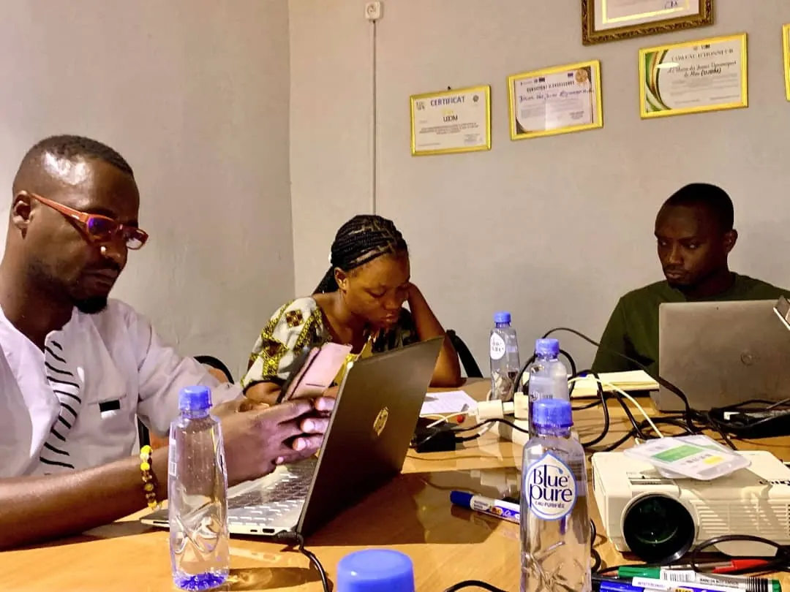

01
Entrepreneuriat
Salle A · Module JA DEEPDe l'idée au pitch : idéation, opportunités durables et préparation au concours de projets.

Les Journées de l'Engagement et du Dynamisme, une initiative de l'Union des Jeunes Dynamiques de Man.

Organisées par l'Union des Jeunes Dynamiques de Man (UJDM), les Journées de l'Engagement et du Dynamisme réunissent pendant trois jours des jeunes de Man, du Tonkpi et de six pays invités.
Une première édition pensée pour apprendre par la pratique, rencontrer des professionnels, porter un projet et s'engager pour sa communauté.

« Entreprendre, s'employer et s'épanouir pour un avenir durable »
Deux parcours de formation au choix et une session commune pour tous les participants.
De l'idée au pitch : idéation, opportunités durables et préparation au concours de projets.
 02
02Compétences de vie et soft skills pour saisir les opportunités professionnelles.
 03
03Une session commune pour comprendre la santé mentale, gérer le stress et savoir demander de l'aide.